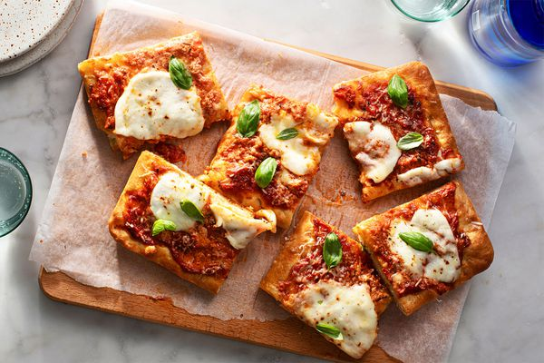

Anabolic Pizza
Description
It’s large, filling, flavorful, low fat, and tastes like PIZZA. The protein packed crust is made from Self Rising Flour and Greek yogurt (hey don’t knock it until you try it). You can switch out the toppings to whatever you’d like. We personally like cheddar instead of mozzarella because it packs in more basil. My favorite is Cherry tomatoes, feta, basil, chicken sausage, and thin sliced onion.
Ingredients
Dough
- 1/2 cup self rising flour
- 1/4 cup fat free greek yogurt plain
- 1/4 teaspoon yeast this is for flavor only
Toppings
- 1/2 chicken sausage cooked
- 1/4 cup fat-free cheddar (kraft makes one)
- 3 tablespoon fat free feta
- 1/4 cup pizza sauce
- sliced onion, spinach, broccoli, mushrooms, or veggies of choice
Steps
- Pre-heat oven to 475° with a sheet pan in the oven. Make sure the rack is centered in the oven.
- Mix flour, yeast, and greek yogurt together and stir until you get a shaggy dough. Work with your hands until you get a dough ball and there are no more bits of dry flour. I knead in the bowl for about 2-3 minutes
- Shape dough into a ball and place on a oil (sprayed) square of parchment paper. Using another piece of oiled parchment paper on top, flatten and roll out using a rolling pin or bottle until it is about 1/4 thick. Remove top parchment paper. Total pizza size should be around 8" in diameter
- Add toppings, transfer pizza to pre-heated sheet pan (leave on the parchment paper).
- If you have a pizza paddle or another sheet pan, use that to transfer the pizza with parchment paper to the pre-heated pan. If not, you can remove the pre-heated sheet pan, transfer the pizza onto it, and then put it back in the oven. If using another sheet pan, just use it upside down to transfer so the pizza can slide right off!
- If you have a pizza paddle or another sheet pan, use that to transfer the pizza with parchment paper to the pre-heated pan. If not, you can remove the pre-heated sheet pan, transfer the pizza onto it, and then put it back in the oven. If using another sheet pan, just use it upside down to transfer so the pizza can slide right off!
Go Back Home